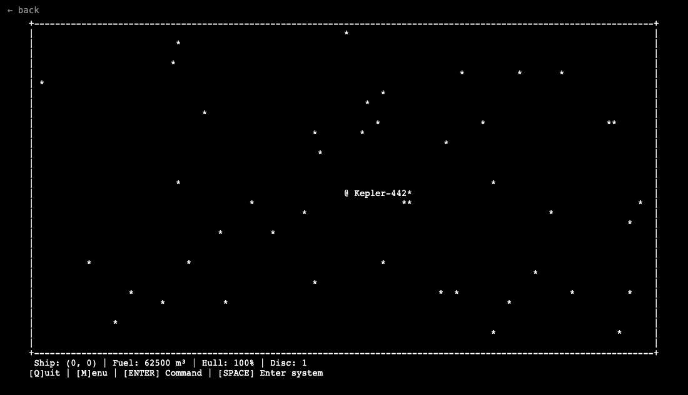
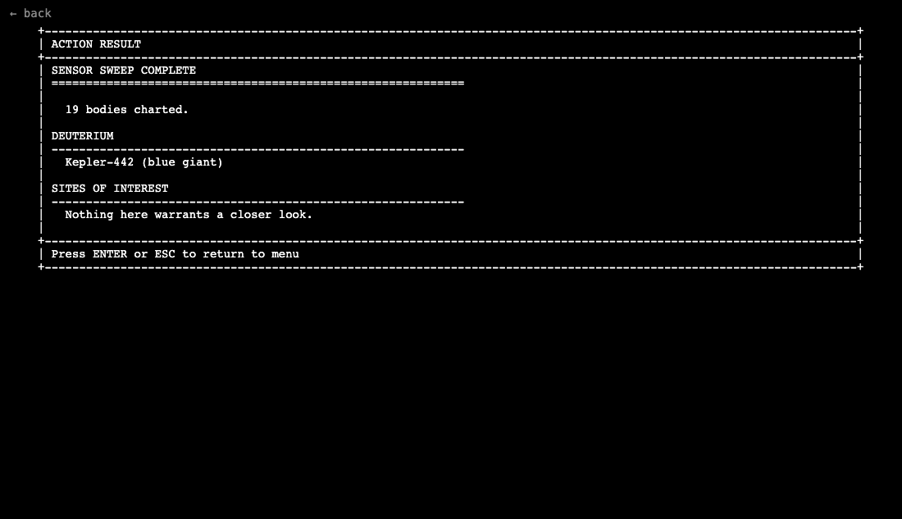

ProcGalaxy
Completion ▰▰▱▱▱▱▱▱▱▱ 20% · a concept: the universe works, the story doesn't yet
ProcGalaxy is my attempt at a small Elite in the terminal: an infinite, seeded 2D universe of star systems you fly through, scan and refuel in, with an LLM meant to narrate what you find.
The universe is generated on demand from a seed, so the same coordinates always give the same system, the same star and the same pronounceable names. Every system has two layers: the overworld map where one cell is a whole system, and a local map with the primary star in the middle, planets on widening orbits, moons next to them and sometimes an asteroid belt at the rim. Space toggles between the two.
Fuel is the tension. Long voyages between systems cost a lot more than moving around inside one, and only some bodies hold deuterium a ramscoop can collect: hot stars, gas giants, ice worlds, icy belts. Not every system is a refuelling stop, so you can actually run dry and drift.
The LLM part is the reason I started it: scan a body, hand the readings to one of your officers, and get a report back that works the hidden narrative hints into a story, or beam down on an away mission written as a little text adventure. The browser version has no LLM (I'm not shipping API keys), so here you get the deterministic side: flying, scanning, the scan reports and refuelling.
Controls: M for the menu, Enter for a command, Space to enter or leave a system, Q to quit.
Features
- Infinite seeded 2D universe, generated on demand and identical for the same seed
- Two map layers per system, overworld and system map, with the ship tracked on both
- Attribute banks of real star classes, planet types and star names, remixed per system
- Deterministic scans with a progress bar and a key/value scan report
- Fuel economy: costly inter-system jumps, ramscoop refuelling at real fuel sources, drifting when empty
- Analysis queue and report inbox: LLM officers write up scanned bodies in the background (native build only)
- Crew with presets and away missions played in free text (native build only)
- Save and load of the full session (native build only)
Under the hood
Whether a star can refuel you is decided by its type alone, and the comment explains why it is so stingy (internal/procgen/fuelsource.go):
// This is deliberately narrow - three of the eleven types. Every star being
// scoopable made every system a refuelling stop, which left fuel scarce nowhere
// and the drift rules unused.
func IsFuelSourceStar(s *Star) bool {
...
switch s.StellarType {
case "blue giant", "blue-white star", "white star":
return true
}
return false
}Scans never touch the LLM, so the same body always reads the same way. Only the analysis afterwards gets to be creative.
Screenshots


Latest updates
- 2026-08-04 Away mission scenes stream in, debug mode
- 2026-07-29 Away missions played in free text, replacing science officer reports
- 2026-07-29 Free-form commands change the ship by tool call
- 2026-07-29 Crew presets
- 2026-07-28 First commit